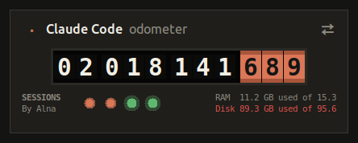
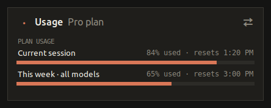
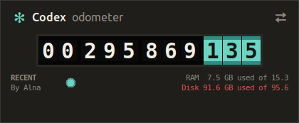
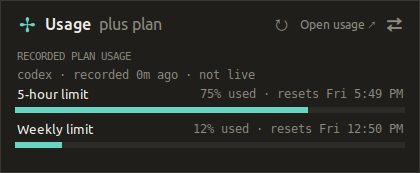

Token Mileage
A small desktop odometer that counts the tokens you use in Claude Code or Codex, shows which sessions are working, and how much of your plan is left. Free, open source, runs on your own computer.
Version 1.1.0 · Windows and Ubuntu (macOS works too) · By Alna


Claude Code Odometer
Tokens Claude Code used on this computer, live session dots, and your plan's session and weekly usage, like /usage.


Codex Odometer
Tokens Codex used on this computer, recent sessions, and the last plan limits Codex recorded. It never reads your sign-in.
Download for CodexLet your AI install it
- Download the zip above.
- Open Claude Code, Codex or another coding assistant on the same computer.
- Copy the matching prompt and paste it in. It finds the download, installs Python if needed (no admin rights or password), installs the odometer and opens it. You don't need to do anything else.
Claude Code Odometer
Install the Claude Code Odometer (Token Mileage) from the token-mileage-claude.zip I just downloaded. Do every step yourself, including installing anything that is missing. Do not ask me questions, and do not ask me to run commands, install software or type a password. 1. Find token-mileage-claude.zip or the unzipped token-mileage-claude folder. Look in the current folder, Downloads, Desktop and my home folder. Unzip it if needed, then move the token-mileage-claude folder to my home folder (~/token-mileage-claude; on Windows %USERPROFILE%\token-mileage-claude), replacing any older copy there. 2. Get a Python 3.9 or newer that includes Tk. Test each candidate with: <python> -c "import tkinter, sys; print(sys.version)" Try python3 on Linux and macOS; on Windows try "py -3" and "python" (never "python3"). If none works, install one without admin rights or sudo using uv: - Linux / macOS: curl -LsSf https://astral.sh/uv/install.sh | sh - Windows (PowerShell): powershell -ExecutionPolicy Bypass -c "irm https://astral.sh/uv/install.ps1 | iex" Then run "uv python install 3.12" and use the interpreter path printed by "uv python find 3.12" (uv's Python includes Tk). If uv is not on the PATH yet, call it by its full path: ~/.local/bin/uv (Windows: %USERPROFILE%\.local\bin\uv.exe). Call the working interpreter PY in the steps below. 3. In the token-mileage-claude folder run: PY doctor.py If any check says fail, fix it yourself and run it again until everything is ok. 4. Run: PY install.py --launch This adds the desktop shortcut and the app menu / Start Menu entry, and opens the odometer. 5. Run: PY install.py --status Then tell me in two short lines where the shortcut is and that it is running, and that "PY install.py --autostart" makes it start at login. Do not change the "By Alna" credit or the LICENSE.
Codex Odometer
Install the Codex Odometer (Token Mileage) from the token-mileage-codex.zip I just downloaded. Do every step yourself, including installing anything that is missing. Do not ask me questions, and do not ask me to run commands, install software or type a password. 1. Find token-mileage-codex.zip or the unzipped token-mileage-codex folder. Look in the current folder, Downloads, Desktop and my home folder. Unzip it if needed, then move the token-mileage-codex folder to my home folder (~/token-mileage-codex; on Windows %USERPROFILE%\token-mileage-codex), replacing any older copy there. 2. Get a Python 3.9 or newer that includes Tk. Test each candidate with: <python> -c "import tkinter, sys; print(sys.version)" Try python3 on Linux and macOS; on Windows try "py -3" and "python" (never "python3"). If none works, install one without admin rights or sudo using uv: - Linux / macOS: curl -LsSf https://astral.sh/uv/install.sh | sh - Windows (PowerShell): powershell -ExecutionPolicy Bypass -c "irm https://astral.sh/uv/install.ps1 | iex" Then run "uv python install 3.12" and use the interpreter path printed by "uv python find 3.12" (uv's Python includes Tk). If uv is not on the PATH yet, call it by its full path: ~/.local/bin/uv (Windows: %USERPROFILE%\.local\bin\uv.exe). Call the working interpreter PY in the steps below. 3. In the token-mileage-codex folder run: PY doctor.py If any check says fail, fix it yourself and run it again until everything is ok. 4. Run: PY install.py --launch This adds the desktop shortcut and the app menu / Start Menu entry, and opens the odometer. 5. Run: PY install.py --status Then tell me in two short lines where the shortcut is and that it is running, and that "PY install.py --autostart" makes it start at login. Do not change the "By Alna" credit or the LICENSE.
Install it yourself
One zip works on every system. You need Python 3.9 or newer.
- Install Python from python.org if you don't have it (keep "tcl/tk" ticked).
- Unzip the download, for example into
Documents. - Open the unzipped folder, click the address bar, type
cmdand press Enter. Then run:
py install.py --launch
This adds a desktop icon and a Start Menu entry. Add --autostart to start it when you log in.
- Make sure Tk is installed:
sudo apt install python3-tk - Unzip the download, for example into your home folder.
- In a terminal inside that folder run:
python3 install.py --launch
This adds a desktop icon and an app menu entry. Add --autostart to start it when you log in.
Updates
Once a day the odometer checks this site for a new version number. When there is one, the back of the card shows Update to …: click it and it updates itself and restarts. Your usage history is kept. You can also run install.py --update yourself.
The check only downloads a version number; it sends none of your usage. Turn it off with install.py --no-update-check.
Privacy
Token counts come from log files on your own computer and never leave it. The Claude meter asks Anthropic for your plan usage with Claude Code's own sign-in, the same as /usage. The Codex meter makes no requests about your account at all.